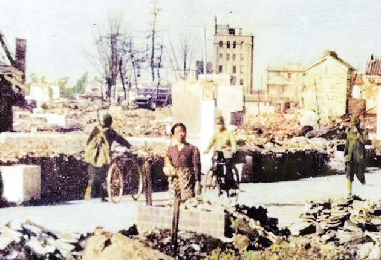

昭和十九年に、主人が召集されましたので、実家のお世話になり、二十年の三月に、長女を出産しました。 そして六月二十日の豊橋の大空襲で、一夜のうちに市内は丸焼けになり、実家も焼けてしまいました。
三ヶ月の娘を背に、着のみ着のままで、逃げました。
岡崎の叔母のお世話になる事となりましたので、十里の道を子供を、背負って歩きましたが、 心の中まで焼ける様な暑い日でした。
秋母の家は名古屋で商売をしていましたが、戦争で出来なくなり、岡崎の旧家の離れを億りて、疎開をしていました。 家族は叔母夫婦と、大学生の息子さんの三人ぐらしでした。 食物の不自由な時に、お世話になり大変だったと思います。 子供も可愛がって貰い、あまり夜泣きする事無く、助かりました。
家のそばには、綺麗な小川が流れ、青々と田圃が統いていました。 川のそばの木蔭に立つと、しばらく戦争のにことも忘れさして、貰いました。
益々空襲も激しくなり、防空壕に入る回数も多くなり食物は無いし、明日の命も分からない、毎日でした。
そして八月十五日の敗戦を迎えたのです。 大きな犠牲を払った平和です、大切にしたいと、思います。
地球を大切に、人に優しい思いやりがあれば、平和はいつまでも、続くのではないでしょうか。
豊橋・空襲
引用: 東日新聞 令和に語り継ぐ豊橋空襲